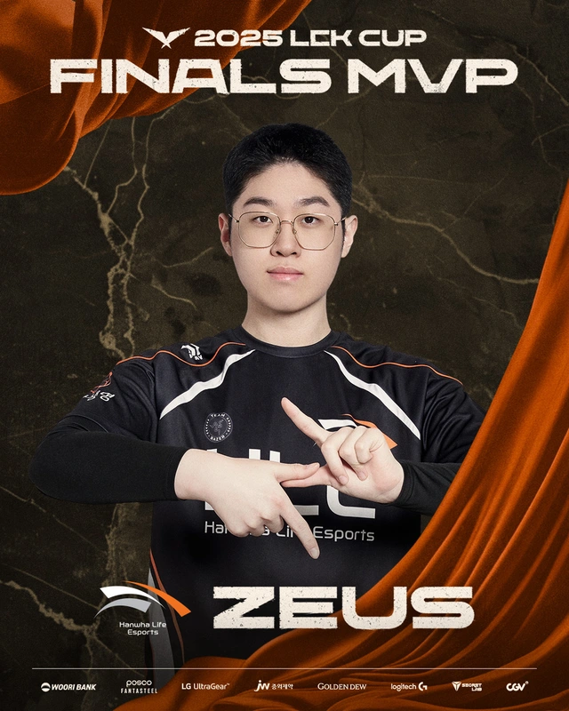
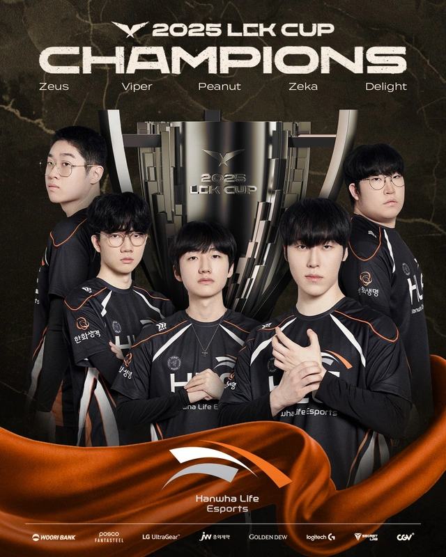
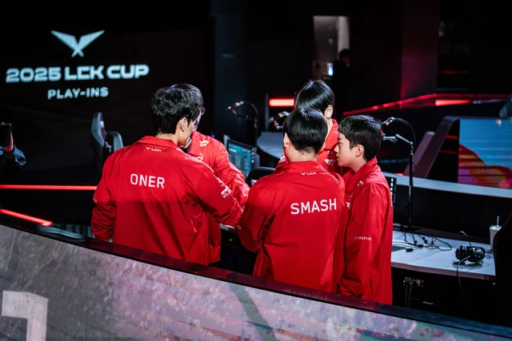
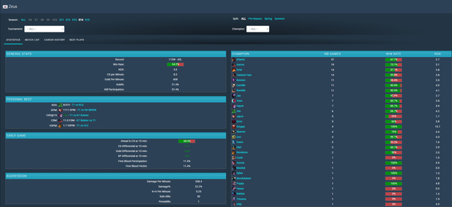
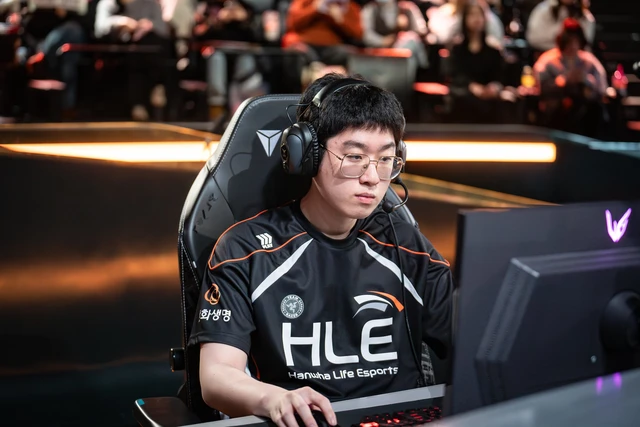

Zeus và T1, chỉ LCK Cup 2025 là chưa đủ
Zeus đã giành danh hiệu đầu tiên kể từ khi rời T1 nhưng có thể như vậy là chưa đủ.
Zeus - T1: Chỉ LCK Cup 2025 có thể chưa chứng minh được gì
Tháng 11/2024, Zeus rời khỏi T1 trong một thương vụ chuyển nhượng ồn ào bậc nhất lịch sử đội tuyển này từ trước đến nay. Khi đó, bên cạnh việc tranh cãi qua lại về sự "hợp tình hợp lý" trong quyết định của Zeus, không ít khán giả cũng muốn xem một điều quan trọng: Không có T1 và nhất là Faker, Zeus có thể làm nên chuyện hay không.

Sau đó khoảng gần 4 tháng, Zeus mang về danh hiệu đầu tiên khi không thi đấu cùng Faker. Chỉ có điều, danh hiệu đó lại là LCK Cup - giải đấu được xem khởi động và thử nghiệm cho Fearless Draft - một chế độ thi đấu mới của LMHT chuyên nghiệp. Tất nhiên, vẫn có rất nhiều lời tán dương cho Zeus. Nhưng có lẽ, chỉ LCK Cup 2025 là chưa đủ.
Đầu tiên, cần phải nhắc lại, Zeus đã có sự thích nghi rất chậm với đội mới. Để rồi khi bắt đầu LCK Cup 2025, HLE thua 2 trận quan trọng trước Gen.G và Dplus KIA. Chính những trận thua này của HLE đã từng khiến đội bị đặt nghi ngờ, trước khi Zeus lấy lại được phong độ và thực sự có đóng góp vào lối chơi chung của nhà vô địch LCK Mùa Hè 2024.
Ngoài ra, một điều quan trọng: rời xa Faker, nhưng đội tuyển mới của Zeus vẫn là một top team hàng đầu LMHT hiện nay. Họ vẫn có một thủ lĩnh (Peanut), một cặp bot uy tín (Viper - Delight), một Đường Giữa đủ khả năng tạo đột biến (Zeka). Có thể nói, HLE mạnh không kém T1 phiên bản CKTG 2024, và đây lại là đấu trường mà họ được thi đấu thoải mái thay vì áp lực danh hiệu như CKTG.
Một yếu tố khác cũng đáng cân nhắc: các đối thủ chính của HLE tại Regular Seasons sắp tới (Gen.G, T1, DK, KT) đã thực sự bung hết sức chưa? T1 sử dụng Smash - Xạ Thủ đôn lên từ Challengers để thử nghiệm. Trong khi DK quá phóng khoáng với các lựa chọn "dị". Còn Gen.G, bản thân các tuyển thủ như Canyon hay Chovy thường xuyên mắc lỗi ở các trận đấu. Do đó, câu hỏi về việc các top team LCK đã thi đấu với những gì tốt nhất hay chưa vẫn còn bỏ ngỏ.
Tất nhiên, Zeus vẫn rất xuất sắc với FMVP của LCK Cup 2025 và Zeus vẫn chơi tốt mọi kèo tướng. Nhưng đây cũng chính là Zeus đã cùng T1 chinh chiến tại CKTG 2024. Khi đó, anh vẫn sử dụng được từ tướng tanker thuần đến Đấu Sĩ hay trở thành 1 trong 2 nguồn sát thương chính của T1. Như vậy, Zeus chỉ đơn giản là đang duy trì được phong độ của bản thân hơn là có sự tiến bộ vượt trội.
Câu trả lời về sự liên quan Zeus - T1 có thể nằm ở Regular Seasons 2025 và sau đó là MSI - CKTG
Với việc First Stand chỉ có 5 đội và thời gian thi đấu ngắn gọn, sẽ khó có thêm đánh giá về Zeus kể cả khi đây là một giải đấu quốc tế và thậm chí còn không tính vào thành tích chung của một đội trong năm 2025. Như vậy, đấu trường thực sự để Zeus chứng tỏ bản thân có thể sống thoải mái và chinh phục các danh hiệu chỉ có Regular Seasons, và sau đó là MSI - CKTG.
Tất nhiên, Zeus là tuyển thủ vô cùng tài năng và điều đó không cần bàn cãi. Nhưng nếu Zeus thực sự muốn khẳng định "rời xa Faker mọi thứ vẫn ổn", thì những đấu trường lớn sắp tới mới là những đỉnh cao thực sự cần anh phải chinh phục được so với LCK Cup 2025 hiện tại.